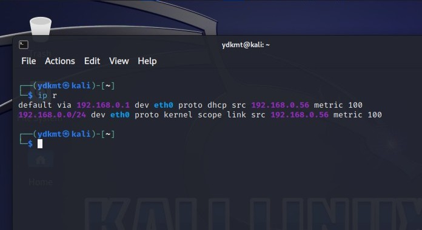
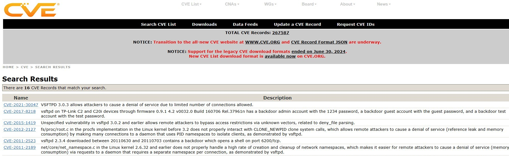
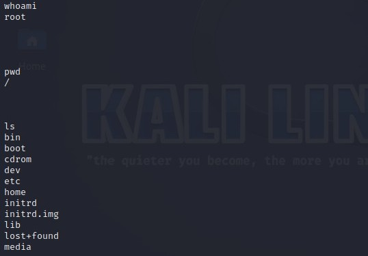

Using Metasploit for Penetration Testing
In this project, I used Metasploit to exploit a vulnerable machine. Below are the steps I followed along with screenshots of the process.
Step 1: Identifying Machine IP Addresses
Once the two machines were span up the first task of action was to find out the IP addresses of both of the machines. I checked the IP address of the Kali Linux machine using the code ip r which is short for ip route. This command shows how network traffic is directed and is just a quick and simpler way be able to see the eth0 IP address which is the one I'm looking for.
Just for documenting purposes I also ran the traditional command to find out the IP address of the Metasploitable machine which is ifconfig. As you can see this still gets me the eth0 address of the Metasploitable machine which will be used as the target address.
Step 2: Scanning the Target
Nmap is an abbreviation for Network Map. This is a great tool that allows us to see open ports on a network. I used Nmap to scan the target for open ports, service versions and used -O to identify the operating system of the Metasploitable machine. The full command I used to do all this can be seen below as nmap -sV -O [192.168.0.44].
As you can see from the results of running the nmap scan in the image above there are many open ports on the Metasploitable machine and the one I will be targeting today is port 21 which has the vsftpd service running on it.
Step 3: Common Vulnerabilities & Exposures
The next step was to see if there was an exploit related to this service on the CVE website. As you can see from the image below, I ran a search on vsftpd and it returned 16 results back me. This is a good indication that this service is exploitable.
Step 4: Launching Metasploit
I started the Metasploit(msf) framework by running msfconsole in the terminal.
Step 5: Exploit Search
In the msf console, I ran the command search vsftpd. This command searches the metasploit framework for any mention of the word that follows 'search'. The image below shows the results of this command
Step 6: Choosing a Module
The image below shows me selecting the second module in the list as this one was ranked as 'excellent' whereas the other one was ranked as 'good'. The command was simple and can be seen below as use 1. I then ran the show options code to display what parameters I need to pass to let this exploit work.
Step 7: Running Exploit
The screenshot below shows me setting the CHOSTS as the Kali Linux IP address and the RHOSTS which is the target, as the Metasploitable machines IP address. Finally, I ran the exploit to initiate the backdoor shell which was successful.
Step 8: Gaining Shell Access
After a successful exploit, I obtained a session, gaining remote control of the machine. The screenshot below shows me running some basic commands which show that I am the root user of the Metasploitable machine giving me free reigns of the entire machine.
Step 9: Unauthorised Directory Creation
Just to show that I have successfully hacked into the machine, I created a directory in the Metasploitable machine via running the command mkdir in the backdoor session of the Kali command line. The image below shows me running this command and shows that the file has been created.
Step 10: Metasploitable Check
With root privelages I can pretty much do anything I wish with the system, whether it be installing malware or just deleting all files. For this example I created a file that says 'YOU HAVE BEEN HACKED'. The image below shows that when I run the ls -l command to list the files the directory has been created successfully.